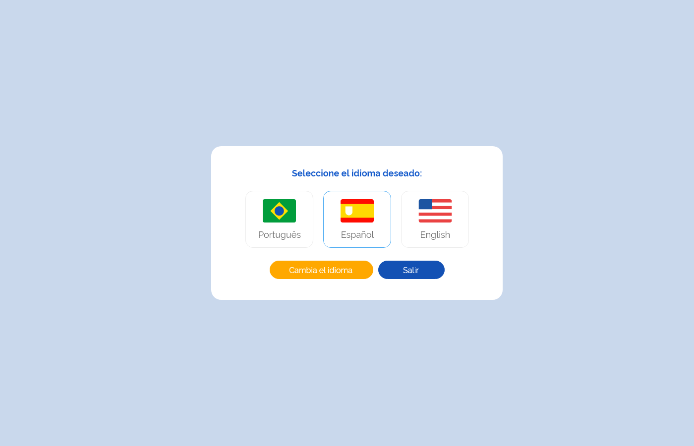

Especificação Técnica 001 - Realizar Login
Descrição
Como usuário quero realizar login para acessar o sistema e suas funcionalidades.
Protótipo 001

Elementos de Tela:
- Logotipo gov.br – M
- Idioma – SU
- Logotipo e-SUS AF – M
- Título da página – “Seja bem-vindo(a)!”
- Subtítulo da página – “Preencha os campos para entrar:”
- Usuário*– N (11)
- Senha* – A (30)
- “Visualizar Senha” * – M
- “Entrar” – BT
- “Esqueci minha senha” – BT
- “Quero me cadastrar” – BT
Legenda
TIPO: A = Alfanumérico, N = Numérico, D = Data, M = Imagem, BT = Botão, LK = Link, SU = Seleção Única, SM = Seleção Múltipla, AC = Autocomplete, * = Obrigatório.
Critérios de aceite
- O sistema deve considerar o idioma “Português-Brasil” como padrão, permitido ao usuário alterá-lo a qualquer momento;
- Quando o usuário acionar opção “Idioma”, o sistema deve apresentar as alternativas de idiomas para utilização do sistema na língua desejada; Protótipo 002
- O sistema deve permitir que o usuário informe as credenciais de acesso;
- Quando o usuário acionar a opção “Entrar”, o sistema deve:
- Verificar se os campos obrigatórios estão preenchidos, caso não, realçar o campo e apresentar mensagem de alerta; MSG053
- Verificar se o usuário informado tem cadastro, caso não, apresentar mensagem de alerta; MSG058
- Verificar se o usuário informado tem cadastro ativo, caso não, apresentar mensagem de alerta; MSG064
- Verificar se as credenciais do usuário informado são válidas, caso não, realçar o campo e apresentar mensagem de alerta; MSG063
Atendendo as validações, o sistema deve realizar a autenticação do usuário e direcionar à tela inicial do sistema (dashboard);
- Quando o usuário corrigir um alerta emitido pelo sistema o campo não deve permanecer realçado;
- Quando a sessão de autenticação do usuário for perdida, o sistema deve redirecionar à tela de “Login”; ETE001
- Quando o usuário acionar a opção “Esqueci minha senha”, o sistema deve direcionar à tela “Esqueci minha Senha”; ETE003
- Quando o usuário acionar a opção “Quero me cadastrar”, o sistema deve direcionar à tela “Meu Cadastro”, permitindo que o usuário realize seu cadastro. ETE002
Protótipo 002 (Idiomas)



Elementos de tela
- Título da página – “Selecione o idioma desejado:”
- Bandeira Brasil - Português – M / SU
- Bandeira Espanha - Espanhol – M / SU
- Bandeira Inglaterra - Inglês – M / SU
- “Alterar Idioma” – BT
- “Sair” – BT
Legenda
TIPO: A = Alfanumérico, N = Numérico, D = Data, M = Imagem, BT = Botão, LK = Link, SU = Seleção Única, SM = Seleção Múltipla, AC = Autocomplete, * = Obrigatório.
Critérios de aceite
- Quando o usuário selecionar o idioma para a utilização da aplicação, o sistema deve alterar automaticamente o texto da mensagem e dos botões para o idioma selecionado.
- Quando o usuário acionar opção “Alterar Idioma”, o sistema deve alterar o idioma da aplicação;
- Quando o usuário acionar opção “Sair”, o sistema deve retornar à tela de “Login”. ETE001